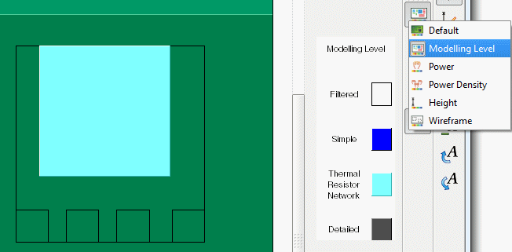

Filtered-out
components can be made visible by changing the default method of
coloring components.
Procedure
- Click the Color Components
icon.
- Select Modeling Level.
Results
Filtered-out components are displayed
in wireframe, for example, see Figure 1.
Figure 1. Filtered Out Components
in Graphics Display Area